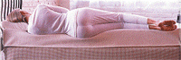
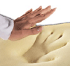

|
|
| | Tempur-Pedic
bugüne kadar insanoðlunun tanýdýpu, kullandýðý yataklarla hiçbir ortak yönü olmayan
uzay biliminin bir eseridir. |
Tempur-Pedic
dünyanin beklediði, uykuda devrim yaratan yataktýr. Diðer yataklarda vücudumuz
ona uyum saðlamak için zorlanmaktadýr, fakat Tempur-Pedic sahip olduðu
milyarlarca hafýzaya sahip özel visco elastik hammaddesi ile sizin vücudunuzun
aðýrlýðýný ve ýsýsýný hissederek kesin þeklini alýp ona tamamen uyum saðlar. Diðerlerinin
aksine o kendini size uydurur. Vücut kimliðiniz hiç önemli deðildir. |
|  | Tempur-Pedic
ile yaþamaya baþladýðýnýz zaman, onun size en yakýn dost olduðunu hissedeceksiniz.
Çünkü o sizi olduðunuz gibi kabul ediyor. |
|
Uyku klinik araþtýrmalarý
diðer yataklar il Tempur-Pedic'i karþýlaþtýrdýklarýnda, uyku esnasýnda
vücudun yapýþmýþ olduðu dönme hareketlerinin Tempur-Pedic' de %83 daha
az olduðu test edilmiþtir. Bütün dünyada 25.000 Týp Oteritesi hastalarýna onca
klinik rapýrlarýna dayanarak Tempur-Pedic ürünlerini önermekte ve çok pozitif
sonuçlar almaktadýrlar. |  |
|
Tempur-Pedic
ürünleri basýnç indirgeyici özelliðinden dolayý düzgün kan dolaþýmý saðlar. Baþ,
boyun, sýrt, omuz, bel, kalça, siyatik aðrýlarýnýn olmasýný engeller. Eðer mevcut
ise doktor tedavisine maksimum katkýyý saðlar. |
Uzmanlar uyku süresinden çok uyku kalitesinin önemli olduðunu söyler. Sýradan
yataklarda uyku sýrasýnda vücut aðýrlýðýnýn yarattýðý etkiler yüzünden hareket
ve kýpýrtý, dolaþým aksamalarý, biz uyuyor olsakta uykunun kalitesini bozar. Sonuç
mu? Dinç uyanamama, gün içinde mahmurlaþma ve elbette baþta boyun, bel, sýrt aðrýlarý
olmak üzere çeþitli aðrýlar. Tempur-Pedic sizleri bunlardan uzak tutacaktýr.
Tempur-Pedic'in Amerikalýnýn yaþam stilini deðiþtiren yatak diye anýlmasýnýn
nedeni budur. | |